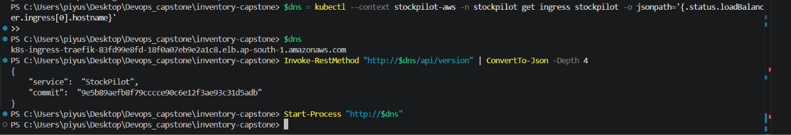
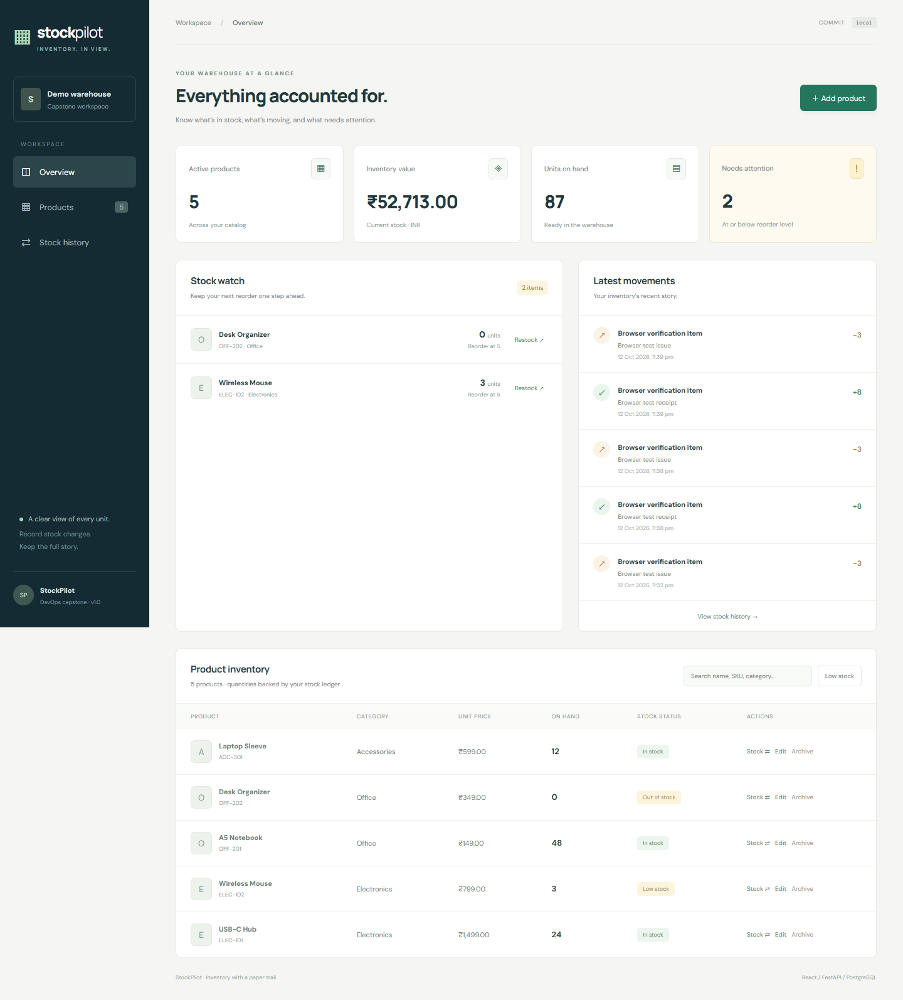
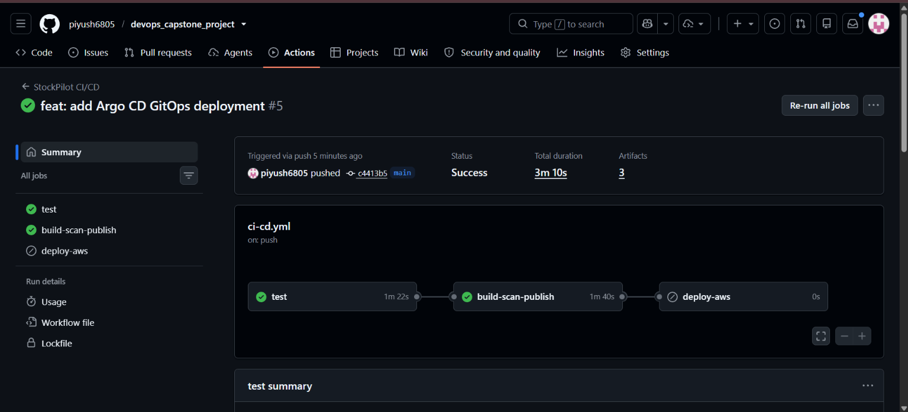
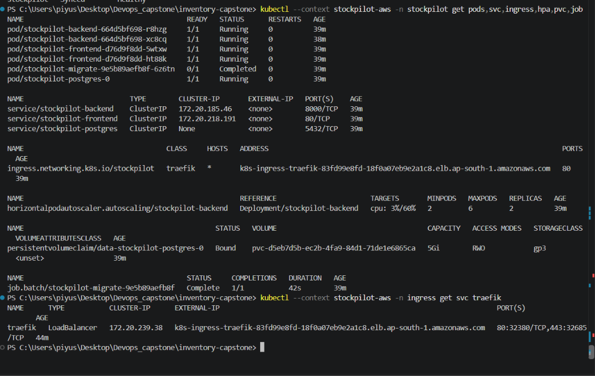
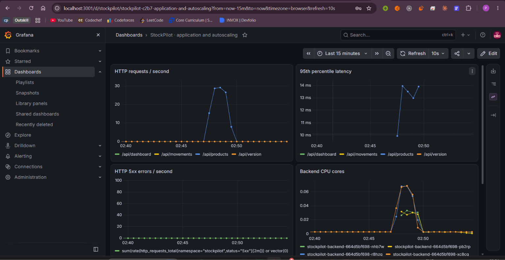
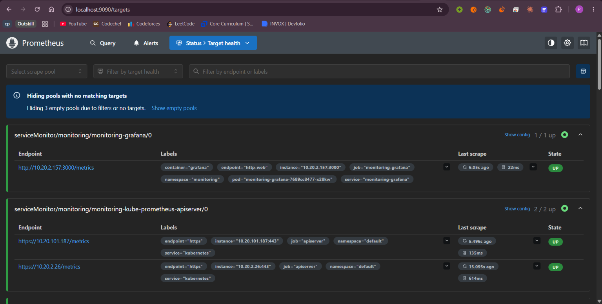

StockPilot served through the AWS ingress

RELEASE ID9e5b89aefb8f…
/api/version returned the StockPilot service name and deployed commit SHA. This AWS database had no demo seed records.
A working inventory app, shipped through CI and GitOps, with Kubernetes health and monitoring evidence.

A focused first release: products, stock movements, and reorder attention.
SKU, category, INR price and reorder threshold.
Receive, issue or adjust; each change creates a movement.
Search products and surface items below their threshold.
The figures shown are fictional local demo data, not live AWS inventory.
User traffic flows through the cluster; commits flow through CI and GitOps.
The green checks are the gate before a release is published.

PostgreSQL-backed API tests and frontend checks.
Build images; Trivy blocks high/critical findings.
Successful main images go to GHCR with SHA tags.
Argo CD reconciles the matching Helm release.
Real cluster evidence: workloads, migration, storage and ingress.

Cluster: stockpilot-eks · Region: ap-south-1 · Ingress: Traefik NLB
A live endpoint ties the AWS-served application back to a source commit.
StockPilot served through the AWS ingress

RELEASE ID/api/version returned the StockPilot service name and deployed commit SHA. This AWS database had no demo seed records.
Prometheus collects metrics; Grafana makes runtime behavior readable.

Grafana · request rate, p95 latency, errors and CPU

Prometheus · target health
StockPilot brings together an inventory workflow, automated quality gates, a GitOps-managed AWS deployment, and operational visibility.
• CI test and image-scan/publish jobs passed.
• Argo CD reports Synced and Healthy.
• AWS EKS workloads and gp3 storage are healthy.
• Monitoring shows traffic and service response.
• The Actions deploy-aws job was skipped; it is not claimed as passing.
After screenshots and recording: destroy the temporary AWS stack, then verify the cluster, load balancer, NAT gateway and storage are gone.